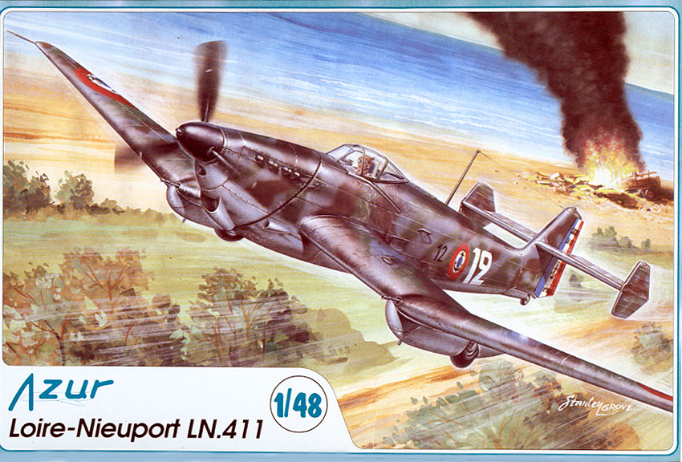
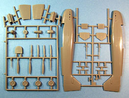
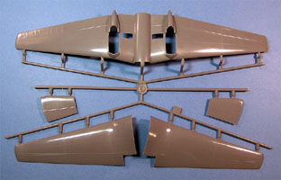
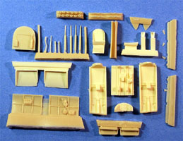
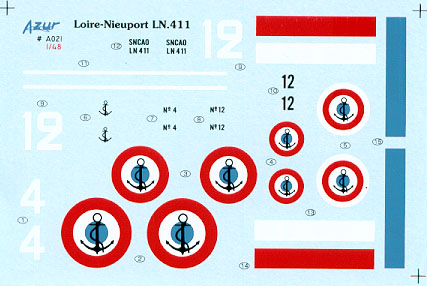

{kind=link}
{kind=link}
{kind=link}
{kind=link}


Azur 1/48 Loire-Nieuport LN.411

Kit #021
MSRP $44.95
Images and text Copyright � 2006 by Matt Swan
Developmental Background
Design work began in 1936 on this butt-ugly dive bomber. It was intended to be a single seat aircraft with semi-retractable landing gear with the primary user being the French Navy and the French Air Force. The first prototype took to the air in 1938 but was judged to be too slow and unwieldy. The Air Force cancelled their order for the aircraft in 1939 and all remaining aircraft were turned over to the Navy. The type saw its first combat on 19 May 1940 when twenty aircraft were sent to attack a crossroads and half of those were promptly shot down and minimal damage was inflicted on the target.
The remaining LN.411s were then relegated to flying reconnaissance missions over the Italian coast until the capitulation of France. After the capitulation of France, the 15 remaining aircraft flew to North Africa and were used by the Vichy Air Force. When German forces overran the factory on June 14 all production was halted and never restarted. From this point the LN.411 began to fade into obscurity.
The Kit
Azur first produced this kit in 1/72 then came back and mastered it in 1/48. This kit arrives in one of those open end boxed that I hate so much with two large trees of parts sealed in poly bags along with a handful of tan resin pieces and a nice little sheet of decals. The main body pieces such as wings and fuselage display fine, crisp engraved panel lines, nice smooth surfaces and no alignment pins and now flash worth mentioning. Looking over the parts I find large injector pin markings on all interior pieces, some of which must be removed prior to assembly. Fortunately there does not appear to be any sink marks anywhere. The aft fuselage and tail surfaces show a good ribbed fabric detail. The propeller consists of separate blades and spinner that must be put together, tires are not weighted and the lower wing is cast as a single piece to ensure proper dihedral. Overall we have thirty nine plastic pieces done in a light gray, low pressure injection mold.
The resin pieces really take this kit the next step. Here we have nicely detailed cockpit sidewalls, gun barrels, seat, control yoke, individual hinge pieces, detailed wheel wells and individual exhaust ports. The resin appears to be good quality and not overly brittle. On the down side several of the finer pieces have been broken in transit and will need to be reassembled. These are not pieces for someone new to the resin experience. The only detail I found lacking was there are no seatbelts on the pilot�s seat. This bag of goodies includes fifty one pieces. Lastly we have the clear parts, we get two copies of the canopy in vacuform with well defined frame lines and good clarity so this could be easily modeled with the canopy open or closed. For a total parts count we have ninety two pieces total in the box.



You may click on the small images above to view larger pictures
Decals and Instructions
The instructions for this model consist of two A$ sheets folded in half to form eight panels. The opening panel includes a brief history of the aircraft in four languages with poor translation skills. Take your time and read it carefully and you can piece the information together. One and a half panels are devoted to a complete parts map followed by ten exploded view construction steps. We get a few color call-outs but these are by name only with no paint codes or manufacture codes. The last two panels cover decal placement and exterior coloring for two aircraft, both with an interesting tricolor camouflage pattern over neutral gray.

The kit decals provide us with markings for two aircraft. Basically we have the national markings and unit markings but no service stencils or warning markings. The decals have good color density and good print registry. They appear to be nicely thin and hopefully will behave well with setting solutions.
Conclusions
Some aircraft can be ugly like those little ugly dogs, they are so ugly they start to look good. Not this plane, it�s just plain ugly. The kit is relatively new on the market and as such there is nothing out on the aftermarket at the time of this writing. The model does have some construction issues to be aware of � those wing radiators are a real pain from what I�ve heard and you should have a good supply of putty and fresh razor knives handy before you start this project. It definitely makes for something different on the modeling shelves but historically did not play a significant role in the industry. This model is not for beginers.